Zanskar is the most remote valley in Ladakh: a high plateau of Buddhist villages and cliff-top monasteries reached by one road over the Pensi La. This private road trip acclimatises you in Leh, follows the old Srinagar road west past Lamayuru's moonland to Kargil, climbs the Suru Valley to Rangdum and spends three nights in Padum. Back in Leh, you cross Khardung La to the sand dunes of Nubra and finish at Pangong Lake. The drives are long and the roads rough; the reward is a Ladakh few visitors see.
See it for yourself
Photos from the journey
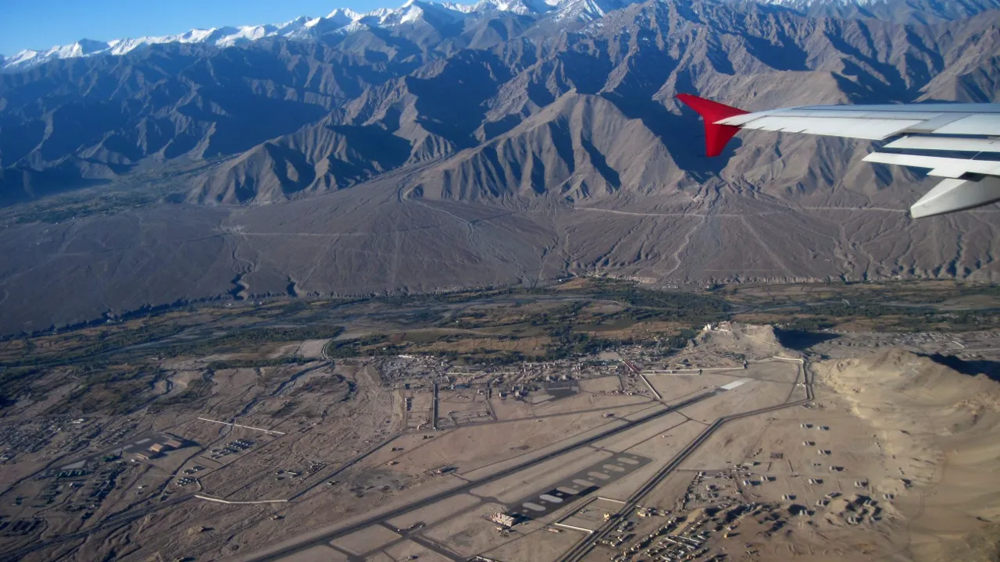
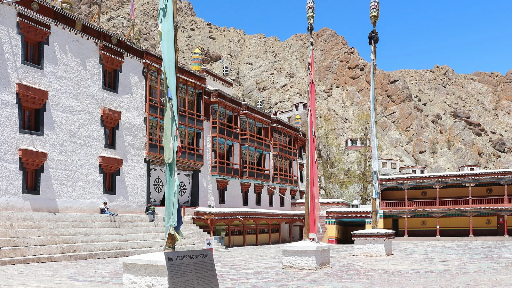

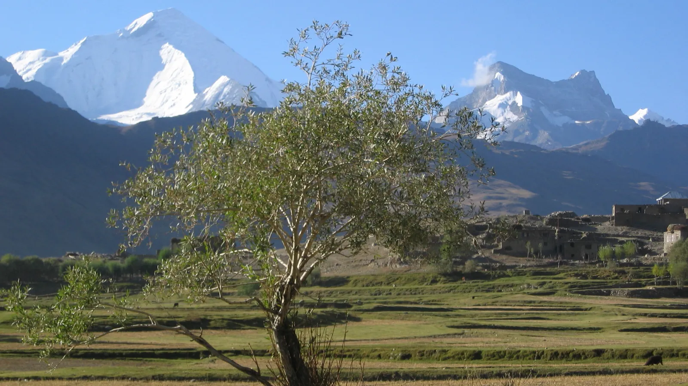
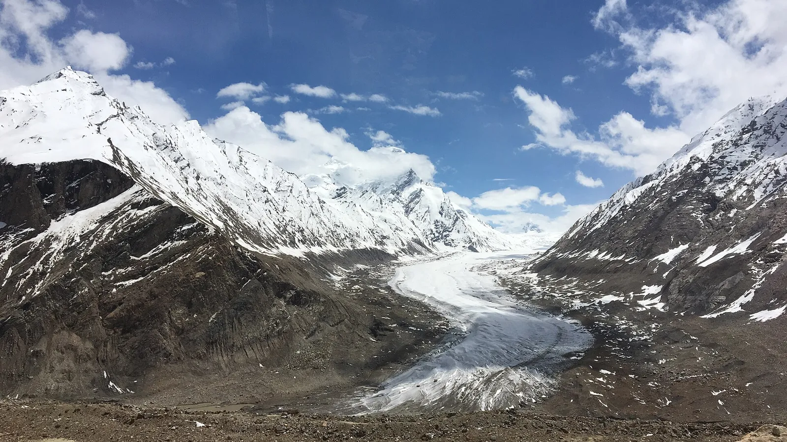
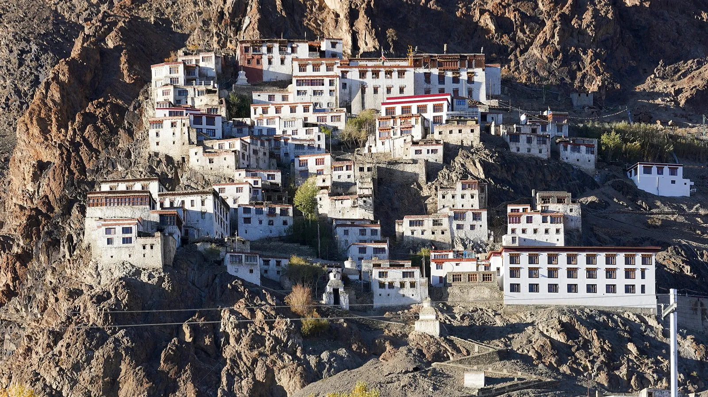
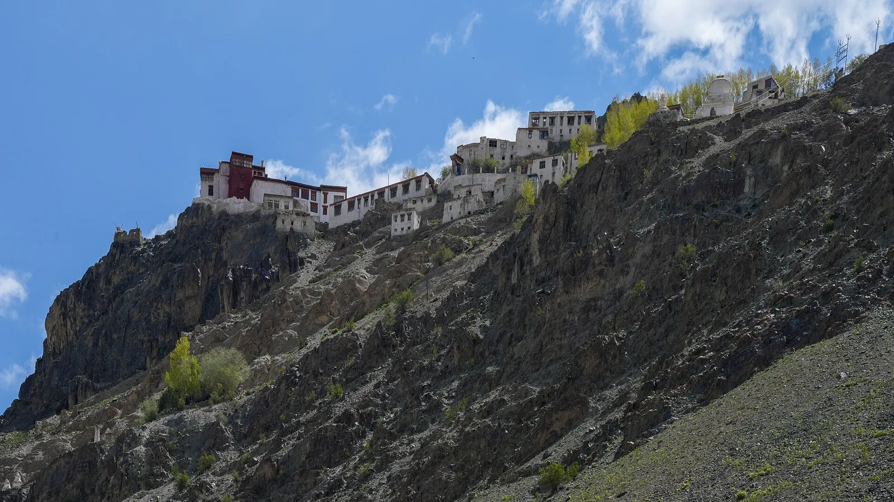
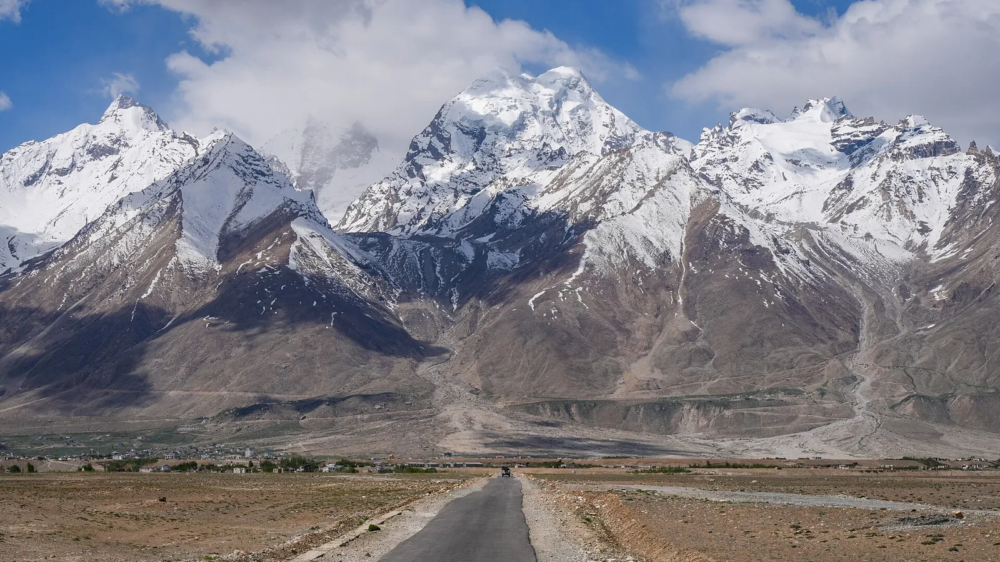
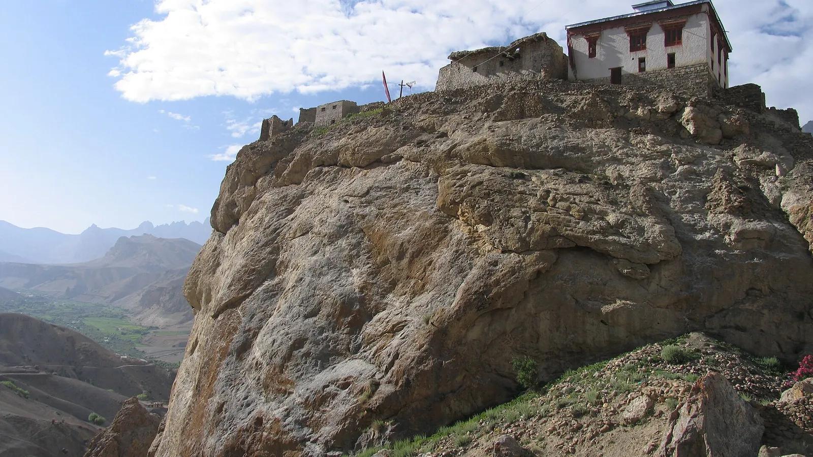

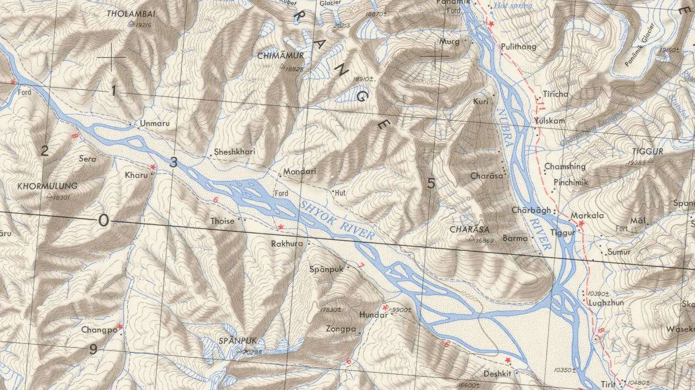

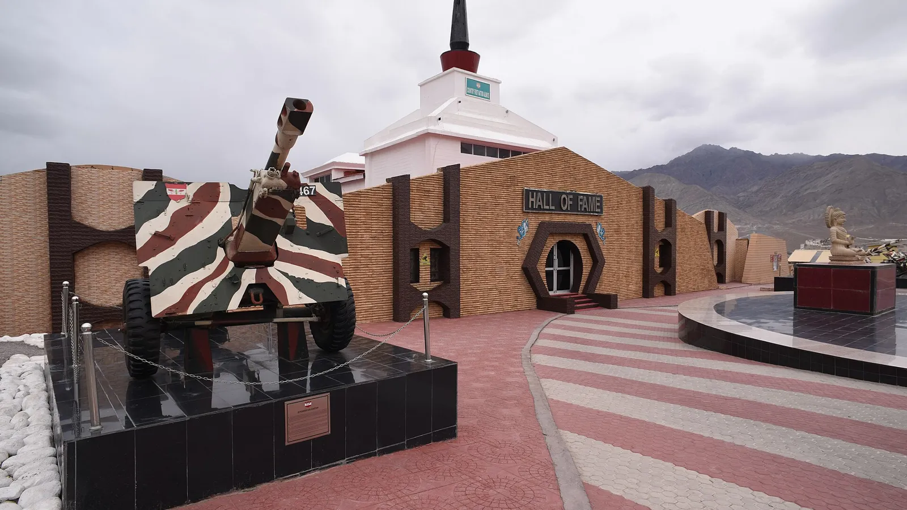

Where you go
The journey on one map
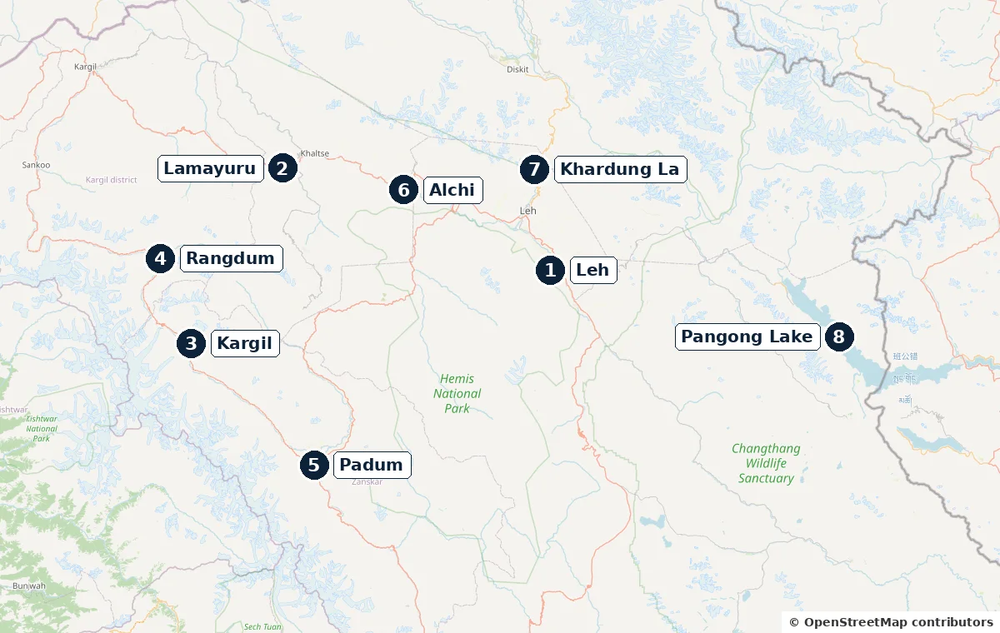
LehLamayuruKargilRangdumPadumKargilAlchiLehKhardung LaHunderPangong LakeLeh
Day by day, in short
Daily travel brief
Distances are by road for the whole day. The full plan with timings comes with your detailed itinerary.
-
1
Fly into Leh and rest
- Rest at the hotel: altitude sickness is the main risk in Ladakh.
- Headache, nausea or breathlessness that gets worse is a reason to see the doctor at once.
-
2
Hemis, Thiksey and Shey, then Leh Palace
Thiksey Monastery Shey Palace Shanti Stupa
- Hemis Monastery: cover shoulders and knees, remove hats inside the prayer halls.
- Leh Palace, Shanti Stupa and Leh Market: shanti Stupa has over 500 steps; you can drive to the top instead.
-
3
West along the Indus to Lamayuru and Kargil
Magnetic Hill Ladakh Likir Monastery Lamayuru Monastery
- Kargil is mainly Shia Muslim.
-
4
Up the Suru Valley to Rangdum
- Rangdum stays are simple camps or guesthouses with limited power.
-
5
Over Pensi La into Zanskar
Drang Drung Glacier Sani Monastery
- There is no ATM you can rely on in Zanskar.
-
6
Karsha and Bardan monasteries
- Karsha Monastery: a steep climb up to the main hall.
- If a festival is on at Karsha, the masked cham dances are the highlight of the year.
-
7
Stongde and Zangla
- Tomorrow is the longest drive of the trip.
-
8
The long road back to Kargil
- Leave Padum: this is a 10-hour day on rough road.
- If you would rather not do this day, Zanskar can also be left by the new Shinku La road to Manali.
-
9
Mulbekh, Alchi and Basgo to Leh
Alchi Monastery Basgo Monastery
- Alchi Choskor: no photography inside the Alchi temples.
- Back in Leh: a good day for laundry and a hot meal in town.
-
10
Over Khardung La to the Nubra Valley
- Khardung La: stay no more than 15 to 20 minutes at the top.
- Hunder sand dunes: camel rides are paid directly at a fixed rate.
-
11
Along the Shyok river to Pangong Lake
- This is the highest night of the trip.
-
12
-
13
A free day in Leh
- Leh at your own pace: the Hall of Fame is closed on Mondays.
- Buy apricot jam, sea-buckthorn juice and pashmina only from certified shops.
-
14
Fly home from Leh
- Transfer to Leh airport: be at the airport 2 hours before departure.
- Leave a buffer day before any connecting international flight: Leh flights are sometimes cancelled by weather.
Local know-how
Travel hacks from our desk
Altitude comes first
Leh is at about 3,500 m. Rest completely on the first day, drink 3 to 4 litres of water a day, avoid alcohol and smoking, and climb slowly. Ask your doctor about Diamox before you travel. Tell us about heart, lung or blood-pressure conditions before booking.
Phones
Only postpaid connections from other states work in Ladakh; prepaid SIMs from outside do not. Jio and Airtel postpaid have the widest coverage. Signal is weak or absent at Pangong, Tso Moriri and in Zanskar.
Layers, sun and monasteries
Even in summer it can be below zero on the passes. Carry a down jacket, cap, gloves, sunglasses and strong sunscreen. In monasteries cover shoulders and knees, remove hats, walk clockwise and ask before photographing monks.
Cash
ATMs work in Leh and Kargil only, and not always. Carry enough cash for the whole trip outside Leh. UPI works where there is signal.
UPI, cards and cash
UPI works almost everywhere, even at small stalls. Keep some cash in INR 100 and 200 notes for temples, parking, tips and places where the network is weak.
Temple and shrine etiquette
Cover shoulders and knees. Remove shoes where asked, and carry socks for hot stone floors. Leather belts and bags are not allowed inside some Jain and Hindu temples. Ask before photographing people and inside shrines.
Water and street food
Drink sealed bottled or filtered water only. Choose busy stalls where food is cooked in front of you, and skip cut fruit and ice from roadside stalls.
Plugs and tipping
Plugs are Indian three-pin and two-pin, 230 volts. Tipping drivers and guides about INR 300 to 500 a day is appreciated.
When to go
Best time to visit for this journey
Late August to mid-September: all roads open, clear skies and fewer visitors.
Mid-June to mid-September, when the Pensi La road into Zanskar is open and the camps are running. July and August are warmest; September is clearest. Ladakh is a rain-shadow desert, so the Indian monsoon barely reaches it.
The package
What's included
Included
- 13 nights in hotels, camps and guesthouses, with breakfast and dinner
- Private SUV with driver for the whole tour
- Airport transfers in Leh
- Environment-fee permits for Indian citizens
- 24/7 support from Blue Diamond Voyage
Not included
- Flights to and from Leh
- Monastery entry fees and camel rides
- Lunches
- Oxygen cylinders and medical costs
- Costs from road blocks, landslides or flight cancellations
- Travel insurance
The detailed itinerary
Some journeys are planned. Ours are crafted.
The full 14-day plan is ready: hour-by-hour timings, drive times, temple dress codes, food for your diet and a route map for every day. Tell us your dates and your city, and we'll send it to you on WhatsApp, shaped around you.
- Hour-by-hour timings
- A route map for every day
- Hotel and room details
- Visa and entry steps
- Vegetarian and Jain dining
24/7 travel desk+91 97148 59797+91 98242 21400
Photo and map credits
- Kushok Bakula Rimpochee Airport: caffeineAM, CC BY 2.0, via Wikimedia Commons
- Hemis Monastery: Bernard Gagnon Canon EOS REBEL T4i, CC BY-SA 4.0, via Wikimedia Commons
- Gurudwara Pathar Sahib: Lalitgupta isgec, CC BY-SA 4.0, via Wikimedia Commons
- Panikhar: Malikbek, CC BY 3.0, via Wikimedia Commons
- Pensi La: Srishtisudhassk, CC BY-SA 4.0, via Wikimedia Commons
- Karsha Monastery: This Photo was taken by Timothy A. Gonsalves. Feel free to use my photos, but pl, CC BY-SA 4.0, via Wikimedia Commons
- Stongde Monastery: This Photo was taken by Timothy A. Gonsalves. Feel free to use my photos, but pl, CC BY-SA 4.0, via Wikimedia Commons
- Padum: This Photo was taken by Timothy A. Gonsalves. Feel free to use my photos, but pl, CC BY-SA 4.0, via Wikimedia Commons
- Mulbekh Monastery: Jparande, CC BY-SA 3.0, via Wikimedia Commons
- Khardung La: Vyacheslav Argenberg, CC BY 4.0, via Wikimedia Commons
- Shyok: US Army Map Service, Public domain, via Wikimedia Commons
- Pangong Lake: KennyOMG, CC BY-SA 4.0, via Wikimedia Commons
- Hall of Fame Leh: Chris Hunkeler from Carlsbad, California, USA, CC BY-SA 2.0, via Wikimedia Commons
- Kushok Bakula Rimpochee Airport: caffeineAM, CC BY 2.0, via Wikimedia Commons
- Maps: © OpenStreetMap contributors; road routes by OSRM.